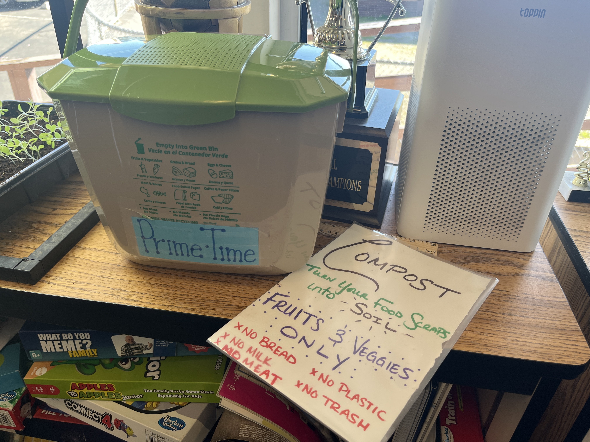

Gardening
Shani finds peace and joy in working with the earth to grow organic food. She loves the feeling of dirt on her hands and the satisfaction of seeing the plants grow from tiny seeds to delicious vegetables.
Singing

Shani's beautiful voice expresses her passions and sings to connect with others. Whether singing in the shower or performing in front of a crowd, Shani's messages float through the air like pollen.
Swimming
Shani Sears is a passionate advocate for regenerative organic agriculture, plant-based living, and
environmental sustainability. With a deep love for nature and a strong belief in the interconnectedness of all living beings,
Shani's journey has been guided by a desire to make a positive impact on the world. When asked about her favorite flowers,
Shani couldn't choose just one. The sunflower, with its vibrant petals and intricate structure, represents a universe of
beauty. The passionflower, on the other hand, captivates her with its otherworldly presence and unique fruits.
Shani's interest in regenerative organic agriculture stems from her commitment to giving back to the Earth and creating a sustainable
food system. Through her work, she aims to support the well-being of not only humans but also insects, animals, and the
microscopic organisms that reside in the soil. Her decision to adopt a vegan lifestyle was driven by a deep realization about
the value of all life. Inspired by her beloved dog companion, Jordan, Shani recognized the inconsistency in how we treat
different beings and chose to no longer contribute to their suffering. Water holds a special place in Shani's heart.
For her, water symbolizes life itself, a precious resource that connects all living things and sustains the planet. She
emphasizes the importance of protecting our natural water sources and respecting the vital role they play in our existence.
With a diverse educational background in herbalism, sustainable agriculture, and sustainability studies, Shani brings a wealth
of knowledge to her work. She has traveled the world, lived on farms, and worked alongside inspiring individuals dedicated to
earth-centered practices. Shani's message is clear: the Earth needs our love and consideration.
In a fast-paced, single-use society, she advocates for a shift towards mindful and sustainable living. By nurturing the Earth
and embracing regenerative practices, we can create a brighter future for all. For those who wish to connect with Shani and
learn more about her work, she can be reached at sunshineearthdesign@gmail.com.